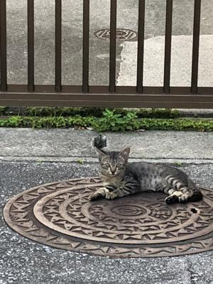

うるがいの話 ある日
最新: ムコですうるがいとは 前提知識です
カニの画像をクリックすると『うるがいの話』サイトを表示します|
|
【うるがいの話】 うるがい(ｳﾙｶﾞｲ urugai)とは、『もずくがに』の名前でとても大きくなります。 |
|---|---|
|
|
【Got cat カミマヤーの話】 たながー（ﾀﾅｶﾞｰtanagaa）とは手長えびのことで、何種類かあり大きいのは車 エビぐらいになります。 |

|
【ぶながぁの話】 ぶながー(bunagaa)とは、赤い髪の毛、赤い身体、そして身長は１ｍ２０ｃｍ ぐらい、川の蟹を食べているの目撃された。場所は沖縄県国頭郡大宜味村のと ある村僕の隣近所に住んでいる爺さんから、聞いた話です。 |
|
|
【ギーマの話】 ギーマ(giima)とは、山原の里山に咲くスズランに似た、 花を付けます。実は食べられます、 気が付くと口の周りが紫になっています。 |
2021年10月12日 (火）ムコです
16:29

そちらは、長男ですか。いいえ、ヨメの夫です（ん、ムコと答えるべきだった
かな）。ヨメのお母さんの２カ月に一度の通院に付き添いで、看護師への質問
の答え、ヨメから渡された指令の紙には『インフルワクチン、介護申請の所見
のお願い』がミッションだった。インフルワクチンの予約は、次回の通院でお
願いします、『予約はいりません、お宅に送られてきた用紙？を持参するだけ
で直ぐに接種できます、ただ、今年の場合１２月に在庫が無い可能性があるの
で早めに』、へぇ予約いらないだ。そして、介護申請の所見の立ち合い、そち
らは、ムコです。『お母さんは、介護を受けられたいますよね、等級は』、ん
知らない、仕方ない、その場でヨメに電話する、要支援２とのこと（ヨメが立
ち会うベキでは・・・・）。看護師は、お母さんの状態をいろいろ確認する。
お母さんは膝が痛いだけで、あとは何でもできます！と看護師に答えている。
そんなことは・・と口を挟もうと考えていたら、介護申請をする人がは多くな
っています、良くなっていると介護を受けられなくなるようなニューアンスで
対応してきた。近頃は目に見えて動作が緩慢になってきて、家事もだんだんし
なくなって（トウトメーのお茶もあげなくないる）、そのそもネガチブな性格
なのでヨメも私も困っている、と答えた。なんで、私が立ち会なければいけな
いのか、ま、いいか。病院は診察を受ける人で溢れている、宣言解除が影響し
ているのかとフと思った。薬のお金を支払うため千円を準備していたら、薬剤
師と固まった、１９６０円です、お！、慌てて２千円を渡す。高齢者医療費負
担が２割に上昇したためか、ネットで調べると本人年収２００万円以上の後期
高齢者が対象とある。